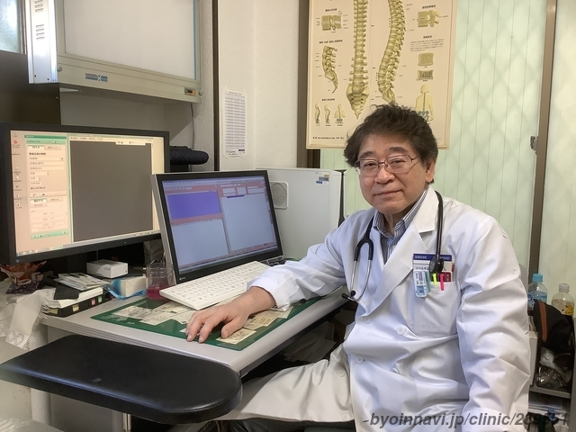

お知らせ
2025.2 花粉症診療開始しました。
クリニック紹介
奥村医院は、地域の皆様の健康を支えるため、内科・外科・整形外科・泌尿器科・肛門外科の診療を行っています。
アットホームで気軽に相談でき、安心・安全な診療を提供します。
診療内容
- 内科：生活習慣病（高血圧・糖尿病・脂質異常症）、風邪、消化器疾患（胃腸炎・胃潰瘍 など）
- 外科：外傷（切り傷・打撲・やけど）、骨折、ケガの処置
- 整形外科：骨折、捻挫、関節痛
- 泌尿器科：前立腺疾患（前立腺肥大症・前立腺炎）、尿路感染症、膀胱炎、排尿トラブル
- 肛門外科：痔（いぼ痔・切れ痔）の治療
- 健康診断・予防接種：一般健康診断、特定健診、企業健診、各種予防接種（インフルエンザ・肺炎球菌 など）
- 自由診療：禁煙外来、ダイエット薬の処方（漢方のみ）
医師紹介
院長：奥村光治郎
地域の皆様の健康を第一に考え、丁寧な診察を心がけています。
診療時間
| 診療時間 | 月 | 火 | 水 | 木 | 金 | 土 | 日 |
|---|---|---|---|---|---|---|---|
| 9:00～12:00 | ● | 休 | ● | ● | ● | ● | 休 |
| 15:00～18:00 | ● | 休 | ● | ● | ● | 休 | 休 |
休診日：火・日・祝日、年末年始、夏季休暇
アクセス
〒167-0021
東京都杉並区井草1-2-15
下井草駅 (駅から東に約130m)
Googleマップはこちら：地図を開く
予約
ご予約・ご相談はお電話または予約ページからお願いいたします。
電話番号：03-5303-9259